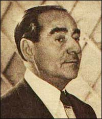

Adnan Menderes

Cumhuriyet tarihinin mümtaz baþbakanlarýndan olmasýna raðmen, öldükten sonra kýymeti anlaþýlan þahsiyetler arasýnda yerini aldý. Yaptýklarýndan dolayý deðil yapmadýklarýndan sorumlu tutularak, haksýz yere idam edildi. Ýdamýna ihtilalciler karar vermiþ ve onu makamýndan ettikleri günü resmi bayram ilan etmiþken, yine bir ihtilalci grup tarafýndan itibarýnýn iade edilmesi ve söz konusu bayrama son verilmesi kaderin garip bir cilvesi olarak tecelli etmiþtir. Türkiye demokrasiyi onun döneminde tanýdý ve halk, demokrasinin nimetlerinden onun döneminde istifade etmeye baþladý.Türk siyaset ve devlet adamý olan Menderes, 1899 yýlýnda Aydýn'da doðdu. Ýzmir'de Ýttihat ve Terakki Okulu ile Kýzýlçullu Amerikan Kolejini bitirdi. I. Dünya Savaþý sýrasýnda yedek subay olarak askere alýndý. Ýzmir'in Yunanlýlar tarafýndan iþgal edilmesi üzerine, Ay-yýldýz direniþ gurubunun kurucularý arasýnda yer aldý. Fethi Okyar tarafýndan kurulan Serbest Cumhuriyet Fýrkasý'nýn Aydýn'da örgütlenmesi ve il baþkanlýðýný üstlendi (1930). Bu partinin kapatýlmasý üzerine CHP'ne geçerek, 1931 seçimlerinde Aydýn milletvekili oldu. Milletvekilliði sýrasýnda eðitimini de sürdürerek Ankara Hukuk Fakültesini bitirdi. Toprak reformu çerçevesinde toprak mülkiyetine sýnýrlama getirilmesi çalýþmalarý üzeri partisiyle ters düþtü.
Celal Bayar, Fuad Köprülü, Refik Koraltan ile birlikte Demokrat Partiyi kurdu. 21 Temmuzda yenilenen seçimlerde Kütahya milletvekili seçildi (1946). Halka yönelik faaliyetleri, etkili konuþmalarý ve demokrasiyi tabana yayma çalýþmalarýnýn neticesinde partisi, 14 Mayýs 1950 seçimlerini ezici bir çoðunlukla kazanarak iktidarý CHP'den devraldý. Celal Bayar'ýn cumhurbaþkaný seçilmesi üzerine, parti baþkaný ve baþbakan oldu (Mayýs 1950). Daha sonra yapýlan 1954 ve 1957 seçimlerini de kazanarak iktidarýný devam ettirdi. Ancak, vatandaþýn oyuyla oturduðu koltuktan 27 Mayýs 1960 ihtilaliyle indirildi ve Ýmralý Adasý'na hapsedildi. Tutukluluðu süresince gayri insaný muamele görüp, adil olmayan bir muhakemenin neticesinde idam cezasýna çarptýrýldý ve cezasý infaz edildi (Eylül 1961).1
Yýllar süren tartýþmalar sonucunda, bizzat ihtilalciler tarafýndan dahi savunulamayacak þekilde maðduriyeti tarih önünde aþikar olan Menderes'in itibarý iade edilerek, yapýlan devlet töreniyle naaþý Topkapý'da yaptýrýlan anýt mezara nakledildi.
Menderes ve Ezan-ý Muhammedî
Demokrat Partinin 14 Mayýs 1950 seçimlerini kazanýp iktidara geldikten sonra yaptýðý ilk icraatlardan birisi, on sekiz yýldan beri inananlarý rahatsýz eden ezanýn Arapça aslýyla okunmasý yasaðýnýn kaldýrýlmasý olmuþtur.
Seçimden 20 gün sonra yayýnlanan demecinde Menderes; Herkesin dini vecibe ve ibadetlerini yerine getirebilmesini, vicdan hürriyetinin gereði ve laikliðin esasý olarak ifade etmiþtir. Bu yüzden ezanýn asliyetiyle okunmasý yasaðýnýn devamý laikliðin gereði deðil aksine, bunun ihlali olduðunu beyan etmiþtir. Ayrýca, bu yasak devam ederken cami içinde bütün ibadet ve dualarýn Arapça olarak yapýldýðýný ifade ederek, bir bakýma yasaðýn mantýksýzlýðýna dikkat çekmiþtir.2
Ezanýn serbestisine imkan veren kanun teklifinde; Anayasanýn, vicdan hürriyetinin dokunulmazlýðý ilkesine raðmen, din ve vicdan hürriyetinden vatandaþý herhangi bir sebeple kýsmen veya tamamen mahrum etmenin, müeyyide koymanýn yanlýþlýðý ifade edilmiþ ve laiklik esasýna uygun düþmediði izah edilmiþtir. Manevi huzursuzluða sebebiyet veren yasaðýn kaldýrýlmasý vatandaþlara huzur ve vicdan rahatlýðý getireceðine vurgu yapýlmýþtýr.3
Menderes Hükümetinin bir ayý dahi dolmadan meclise kanun teklifi vererek yasaðýn kalkmasýný saðlamýþ ve Ramazan ayýnýn baþýna tevafuk eden serbestiyetin saðlanmasý, halk nezdinde büyük bir memnuniyete vesile olmuþtur. Bediüzzaman Hazretleri, Ezan-ý Muhammedi'nin (a.s.m.) neþriyle Demokratlarýn on kat güçlendiðini beyan etmiþtir.4
Adnan Menderes ve Bediüzzaman Said Nursi
Bediüzzaman Said Nursi, 1923 yýlý baþýnda Mecliste yaptýðý konuþmanýn ardýndan, Ankara'nýn siyasi havasýndan rahatsýz olup Van'a giderek, mesaisinin tamamýný iman hizmetine teksif etti. Yýllarca siyasi atmosferi, basýný takip etmediði gibi Ýkinci Dünya Savaþý sýrasýnda dahi dünya ile alaka kurmadý. Ancak, savaþýn acý sonuçlarýndan da kaynaklanan hürriyet arayýþlarý ve bizdeki yansýmasý olan çok partili hayata geçiþle birlikte siyasetle alakadar olup Demokratlarý destekledi.
Menderes'i açýk bir þekilde destekleyerek talebelerini de bu doðrultuda yönlendirdi. Bu desteðinin sebeplerini muhtelif vesilelerle izah etmiþtir. Bu izahlarýnýn bir kýsmý þöyledir:
Demokratlarý küfre karþý muhafaza edip destekliyoruz. Desteðimizi çekersek Demokratlar yýkýlacak ve küfür ortaya çýkacaktýr.5 Menderes komünizm, anarþizm tehlikesini bertaraf etmek, dinsizlik hareketini durdurmak konusunda Risale-i Nurlarýn önemini anlamýþ olup, bu Nurlarýn okullarda ders kitabý olarak okutulmasý için etrafýndakileri iknaya çalýþmaktadýr.6 Adnan Menderes Nurlarýn neþri için maarif vekili Tevfik Beye emir verdi.7 Menderes Ýslamiyet'in ulviyetini anlayan samimi bir Müslüman'dýr.8 Adnan Menderes'le çok alakadarým. O'nu duama dahil ettim.9
Bediüzzaman Hazretleri bir yandan Demokratlarý desteklemiþ, diðer yandan da ikazlarýyla onlara Kur'an hakikatlerini hatýrlatmaya devam etmiþtir. Menderes'e bir mektup yazarak, Ýslam'ýn çok önemli olan ancak günümüz siyasi cereyanlarý tarafýndan dikkate alýnmayan ve ihmali büyük cinayetlerin iþlenmesine sebep olan üç hususa özellikle dikkatini çekmiþtir:
1- "Birisinin cinayetiyle baþkalarý, akraba ve dostlarý mes'ul olamaz" (En'am Suresi, 164. ayet) esasý, tarafgirlik ve particilikle ihlal edilmemeli, bu tehlikeye karþý Ýslam kardeþliði esas alýnýp Kur'an'ýn söz konusu hükmü dayanak yapýlmalý.
2- "Kavmin efendisi, onlara hizmet edendir" þeklindeki Peygamber (a.s.m.) emri hayata geçirilmeli, memuriyetin bir hizmetkarlýk olduðu þuuru yerleþtirilmelidir. Memurluk, hakimiyet ve tahakküm aracý olmamalýdýr. Memuriyeti hizmetkarlýktan çýkarýp tahakküme dönüþtürmek, kýblesiz namaz kýlmaya benzer.
3- "Mümin mümine karþý bir binanýn kenetlenmiþ taþlarý gibidir" hadisini esas yapýp hariçteki düþmanlara karþý dahildeki adavet unutulmalý, dayanýþma saðlanmalýdýr. Bu esas göz önüne alýnýrsa sosyal hayatý saðlam temele oturtmak mümkün olacaktýr.10
Üstad, Menderes'i ziyarete giden talebelerine; kendisinden selam söylemelerini, kendisini dindar bir vekil olarak bildiðini, onun hatýrý için bu memlekette kaldýðýný, kendilerine yardýmcý olunmasýný söylemiþtir.11 Menderes selamý hürmetle almýþ ve kendilerinin müsterih olmalarýný, arzularýnýn yerine getirileceðini beyan etmiþtir. Bilahare Menderes'in, milletvekili Tahsin Tola'ya: Seni vazifelendiriyorum. Hemen faaliyete geçin, Diyanet Ýþlerine gidin.... Eyüp Sabri Efendi (Hayýrlýoðlu) ile görüþün... Risale-i Nurlarý neþretsin,12 dediði ifade edilmektedir.
Bediüzzaman'ýn Menderes ve kendisi ile ilgili tespiti de çok dikkat çekicidir. "Menderes bir din kahramanýdýr. Dine büyük hizmetleri olmuþ ve olacaktýr. Fakat Adnan Bey arzu ettiði hizmetinin semeresini göremeyecektir. Benim de dine hizmetim olmuþtur. Ketm etmeyeyim... Ama ben de hizmetimin semeresini Adnan Bey gibi göremeyeceðim. Her ikimizin de hizmetlerimizin semeresi ileride görülecektir."13
Bediüzzaman'ýn Menderes'e desteðinden en çok rahatsýz olanlarýn baþýnda CHP lideri Ýnönü gelir. Bu konuda gerek kendisi, gerekse partisinin yayýn organý gibi hizmet gören bazý gazeteler çok sert eleþtirilerde bulunmuþlardýr. Üstad'ýn Ankara ziyareti mecliste çok sert tartýþmalara sebep olmuþtur. Ýnönü'nün meclis kürsüsünde Menderes'e hitaben: "Siz þeriatý hortlatýyorsunuz, irticayý hortlatýyorsunuz. Bediüzzaman'ý gezdiriyorsunuz..." sözlerine karþýlýk Menderes'in:
"Allah aþkýna, Paþa niçin bu kadar dinden, dindarlardan rahatsýz oluyor, öleceðini bilmiyor mu? Þimdiye kadar kendisine ne zararlarý dokunmuþtur. Bütün hayatýný dine vakfetmiþ bir pir-i faniden ne istiyor? Niçin eziyetinden hoþlanýyor, niçin meþakkat çekmesinden hoþlanýyor, niye bu kadar dine ve dindarlara karþýdýr, anlayamýyorum?" cevabý üzerine Ýnönü:
"Efendim siz, Atatürkçülerle istihza ediyorsunuz. Öyle zaman gelecek ki, sizi ben dahi kurtaramayacaðým" þeklindeki meþhur tehdidini savurmuþtur.14
Üstad'ýn 23 Mart 1960'da vefatýndan iki ay sonra Demokrat Parti iktidarý da ihtilalciler tarafýndan sona erdirildi ve Demokratlara on yýllýk hizmetlerinin bedeli hapisler, sürgünler ve üç idamla ödetildi!
Dipnotlar:
1. Büyük Larousse Sözlük ve Ansiklopedisi, 15. Cilt, s 7995-96.
2. Köprü Dergisi, Sayý: 66, s. 96.
3. A.g.m. s. 102.
4. Emirdað Lahikasý, s. 396.
5. Necmeddin Þahiner, Son Þahitler Bediüzzaman Said Nursi'yi Anlatýyor, II. Cilt, s. 359.
6. A.g.e. IV. C. s. 157-158
7. A.g.e., s. 367.
8. A.g.e., s. 160.
9. A.g.e., s. 182.
10. Emirdað Lahikasý, s. 396.
11. A.g.e. s. 302; Þahiner, s.243.
12. Þahiner, IV. Cilt, s. 276.
13. A.g.e., III. Cilt, s. 276.
14. A.g.e., s. 277.